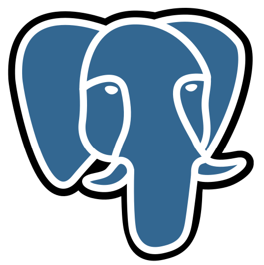
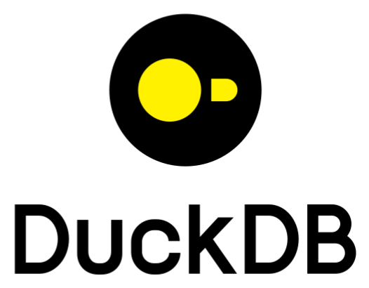
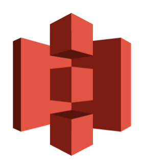

So what is the ‘stochadex’ project?
It’s a simulation engine written in Go which can be used to sample from, and learn computational models for, a whole ‘Pokédex’ of possible real-world systems entirely in YAML.
The framework abstracts away the machinery that sampling algorithms have in common behind a single configurable interface; so a whole simulation, the analysis and inference layered on top of it can be stated as pure configuration.
This simulation engine is designed based on the simulation software fundamentals described in this collection of blog posts.
When to use it
The stochadex fits best when you want stochastic simulation, online inference and simulation-based decision-making over one composable primitive and you want a whole run to be a single config file.
The model, its wiring, the run mode, the data in/out and any inference or optimisation on top are all data: one YAML file, run by one prebuilt binary, with no Go toolchain anywhere in the loop. Maths outside the built-in catalogue can be written as expressions in the same file, so Go is only for genuinely new primitives.
Other declarative formats are narrower (SBML, Modelica) or are languages with their own compilers (Stan, GAML). However, you should probably reach for something else when:
- Large fixed-shape, GPU, or autodiff-heavy Bayesian modelling → Stan, PyMC, or Julia’s SciML.
- Pure discrete-event simulation (entities through queues and servers) → godes or SimPy.
- A standards-based interchange format (systems biology, physical plant) → SBML with COPASI, or Modelica.
- Plain numerics or classical ML in Go → gonum, which the stochadex is built on.
- Training neural networks or deep RL → train in Python, then import a frozen ONNX model to run inference behind a
OnnxInferenceIteration.
Install
Four ways in, depending on whether you’re writing YAML, running it as a pipeline step, letting an agent write it for you, or writing Go.
As a CLI → describe a whole run in one YAML file and execute it with a prebuilt binary. A config that names no Go anywhere runs in-process, so no Go toolchain is needed. See running from a config file.
curl -L "https://github.com/umbralcalc/stochadex/releases/latest/download/stochadex-$(uname -s | tr '[:upper:]' '[:lower:]')-$(uname -m | sed 's/x86_64/amd64/;s/aarch64/arm64/')" -o stochadex
chmod +x stochadexAs a container → the same YAML surface, with every integration already built in (Arrow, Postgres, S3, DuckDB, accelerated BLAS) and nothing to install. See running from a config file.
docker pull ghcr.io/umbralcalc/stochadex:latestAs a Claude Code plugin → installs an authoring skill next to your agent, so you can describe a system in plain language and get a running, validated simulation. It drives the same CLI.
claude plugin marketplace add umbralcalc/stochadex
claude plugin install stochadex@stochadexAs a Go library → implement the Iteration interface to add a primitive the catalogue doesn’t have, or embed the engine in your own service. Start with the quickstart.
go get github.com/umbralcalc/stochadexIntegrations
| Integration | What it does | Where |
|---|---|---|
 |
Load state history into a simulation and write output back over database/sql. Point it at any Postgres-wire database. |
read · write |
| Build simulation output directly as Apache Arrow for columnar interchange (Polars / pandas / Parquet). Opt-in module. | read · write | |
 |
Land the Arrow output in DuckDB for SQL analytics, zero-copy. Opt-in module. | write |
 |
Read and write runs to Amazon S3 or any S3-compatible store (MinIO, Cloudflare R2, Ceph). Opt-in module. | read · write |
| Run a frozen ONNX model trained upstream in Python (with sklearn, XGBoost or a small neural net). Opt-in module. | run |